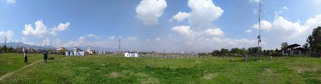
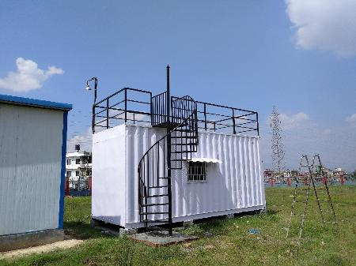
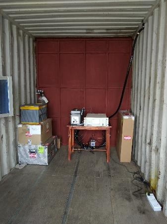
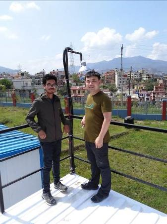

青藏高原被称为世界的“第三极”，是北半球也是我国大气最洁净的地区，但毗邻的南亚等地区是大气重污染区，污染物跨境输入对第三极的大气环境、气候变化和生态系统产生影响。在南亚源区开展大气环境观测，了解大气污染物组成和变化是研究跨境污染物输入影响的基础和必要环节。
中国科学院加德满都科教中心（以下简称“加德满都中心”）在建立之初即规划了观测场站，已有气象观测塔和宽频带地震台等建成运行。近期，中心在原有观测房屋基础上，购置并改造集装箱，并引入了动力电，建成了两个观测房，为各类观测仪器的入场运行提供了优越平台。近日，张强弓副研究员前往加德满都中心，在加德满都中心主管徐田利博士等协助下，经过约一周工作，搭建了大气气态汞在线观测平台并投入运行。期间，与特里布文大学和加德满都大学相关专业研究人员进行了学术交流并开展了仪器培训。该项观测的投入是“泛第三极环境变化与绿色丝绸之路建设”专项“南亚-中亚-西亚大气污染物传输及其环境影响”课题的年度任务之一，将为理解南亚大气污染源区大气汞含量和变化提供数据基础。
目前，加德满都中心的各项基建工程正在有序推动。观测场站的围栏、观测房屋和电力等基础条件已基本具备，预期会迎来一批观测仪器的设立和运行。

加德满都中心观测场站

集装箱改造的观测房


大气气态汞观测平台